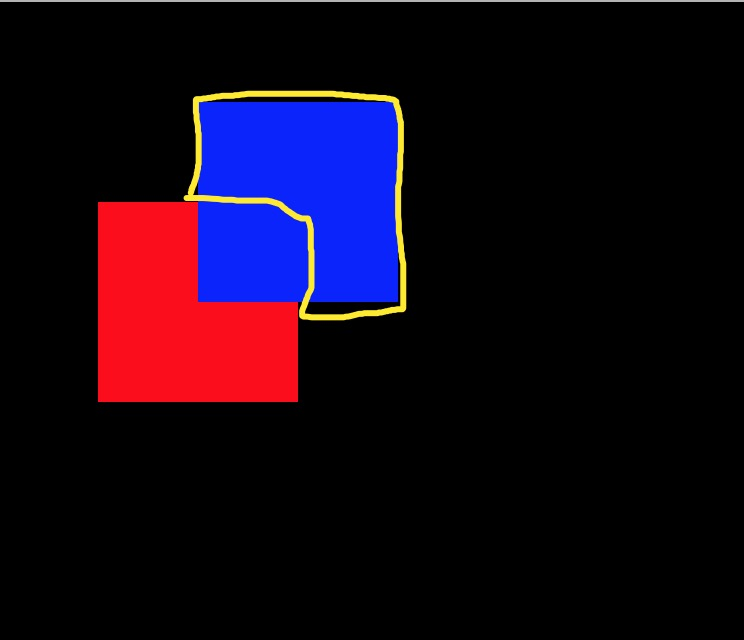
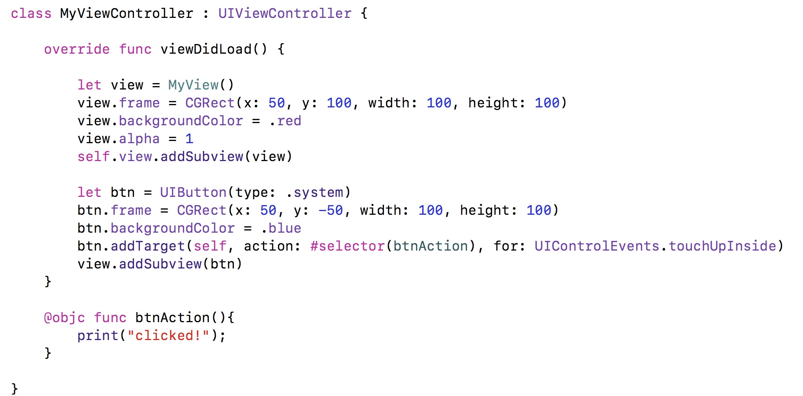
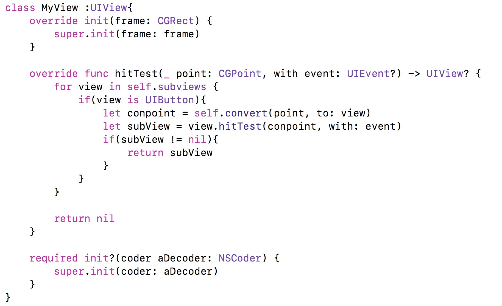
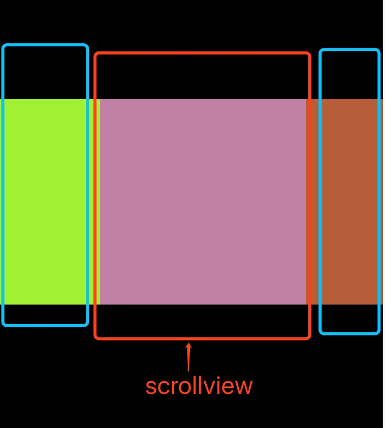
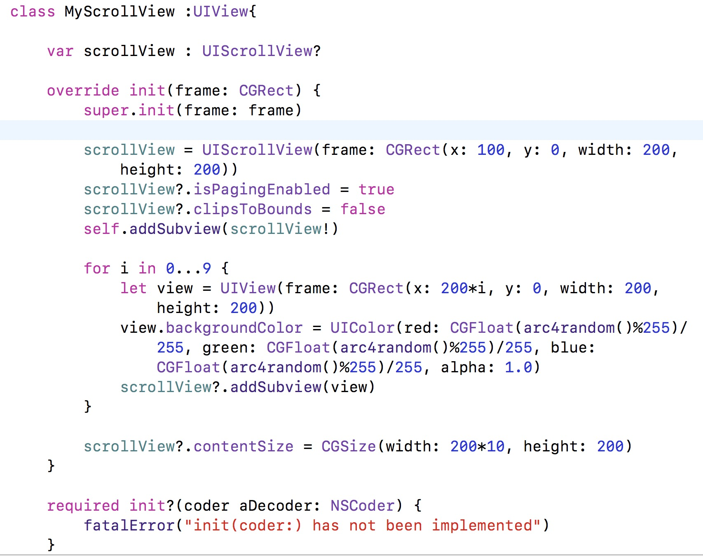
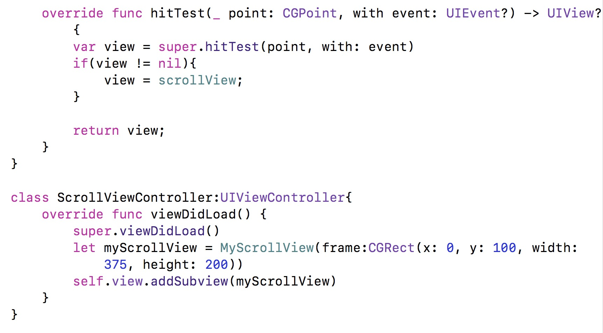

前言
针对iOS事件是怎么传递的这个问题，刚开始面试的几次，基本就是说到屏幕点击->UIApplication->UIWindow->View->Subview->…，没有去强调hitTest这个东西，其实面试官的朝向就是这个。
下面来看下hitTest源码实现
|
|
通过看上面的hitTest源码实现，我们大致懂了事件传递的规则，所以我们通过重写该方法，来实现一些”跨常理”的效果，比如view的isUserInteractionEnabled为false的时候也能接受触摸事件，或者view的hidden为true的时候也能接受触摸事件，又或者view的alpha小于0.01时也能接受触摸事件，不过这些有反常规，下面讲些开发中的实际例子来说下hitTest的作用。
例子：
1.增大可触控范围

|
|
2.子视图超出父视图区域

> 如上图所示，如果要实现黄色区域可以响应点击事件可以重写红色的视图，如下所示


这个主要在凸起的tabbar上使用
3.超出滚动视图的部分区域

> 如上图所示，如果要实现两边蓝色区域能够接受左右滑动事件，如下所示：


4.滴滴主界面事件传递部分
这部分等我写个demo出来再更新
总结
对于iOS事件的传递，大概就是这样，之后我有想到别的实用例子，再继续更新本节内容。